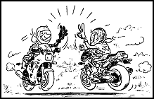
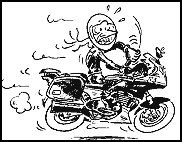
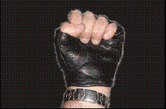

Les differents signes utilisés en moto
 Le premier salut entre motard, effectué lorsque l'on se croise, consiste à faire un signe de la main gauche. Ce signe peut aussi être fait avec deux doigts en V, pour en référence Barry Sheene après chaque course gagnée.
En cas de croisement, à faible allure, un simple signe de tête fera aussi l'affaire

Le deuxieme signe est réservé en cas de dépassement. Il permet de saluer un autre motard, ou de remercier une voiture qui s'est rabatue, ou a facilité un dépassement
Attention toutefois, lorsqu'on l'adresse à un automobiliste, qui peut le confondre avec le geste de coup de pied dans la portiere

Ce moyen de communication est très universel, et d'ailleurs aussi utilisé par les automobilistes. Il s'agit de prévenir les automobilistes d'en face d'un danger imminent (radar dans la majorité des cas)

Ce signe indique aux motards qui font la route avec vous que vous venez de passer en reserve, et que votre autonomie est donc faible
attention de ne pas confondre ce signe avec le suivant
Dans ce cas là, ce n'est plus la moto qui a soif, mais le pilote. Une pause s'impose

Ce geste indique un nid de poule

Ce signe sert à montrer son fort mécontentement. Soit le motard n'a pas répondu à ton signe, soit l'automobiliste t'a fait une crasse. Ce signe montre que tu l'attendras au prochain feu....
Une variante de se signe consiste à lever le majeur. Après, chacun son truc...